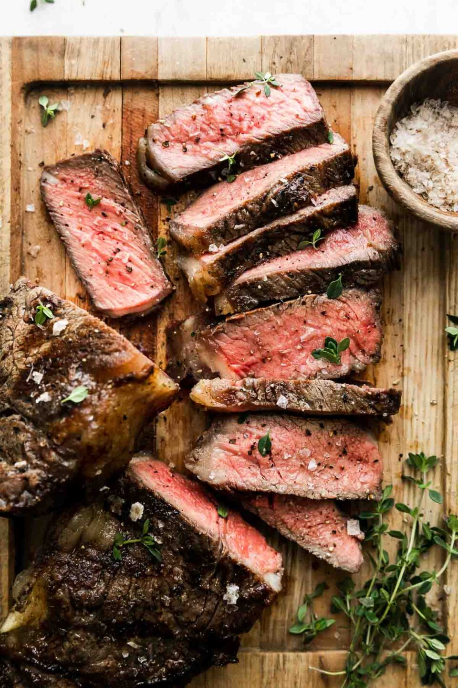

Steak

Description
Cooked steak epitomizes the elegance of simple cooking, focusing on high-quality beef cuts cooked to perfection. Popular methods like grilling and pan-frying create a flavorful crust outside and a tender inside, seasoned often with just salt and pepper to enhance the meat's natural taste.
The charm of a well-cooked steak lies in its succulent texture and rich flavors, a balance of caramelized exterior and juicy interior. It's a celebrated dish for its straightforward yet sophisticated appeal, offering a deeply satisfying experience to meat enthusiasts.
Ingredients
- 1 beef steak (ribeye, sirloin, or your choice of cut), approximately 1-inch thick
- 2 tablespoons of avocado oil
- 2 tablespoons of unsalted butter
- 2 garlic cloves, lightly crushed
- A few sprigs of fresh thyme or rosemary
- Salt and Pepper
Steps
- Prepare the Steak: Let the steak rest at room temperature for about 30 to 40 minutes before cooking. This step ensures more even cooking. Pat the steak dry with paper towels to ensure proper searing. Season the steak generously on both sides with salt and pepper.
- Sear the Steak: Heat a heavy skillet, preferably cast iron, over medium-high heat until hot. Add the avocado oil to the skillet, swirling to coat the bottom. Once the oil is shimmering but not smoking, carefully place the steak in the skillet. Cook the steak without moving it for about 3-4 minutes, until a golden-brown crust forms. Flip the steak. Sear the other side for another 3-4 minutes for medium-rare, or adjust the time for your desired doneness.
- Add Butter and Aromatics: Reduce the heat to medium. Add the butter, garlic, and herbs to the pan, placing them near the steak. As the butter melts, tilt the pan slightly and use a spoon to baste the steak with the melted butter continuously. This process should take about 1-2 minutes, adding flavor and richness to the steak.
- Check for Doneness: For precise doneness, use a meat thermometer: 135°F (57°C) for medium-rare; 145°F (63°C) for medium; 155°F (68°C) for medium-well. If desired, briefly remove the steak and quickly deglaze the pan with a splash of red wine or beef broth, scraping up any browned bits for an extra flavor boost. Pour this sauce over the steak after resting.
- Rest the Steak: Remove the steak from the pan and transfer it to a cutting board. Let it rest for about 5-10 minutes to allow the juices to redistribute.
- Serve: Slice the steak against the grain and serve it with your favorite sides. Drizzle any pan juices over the top for added flavor.